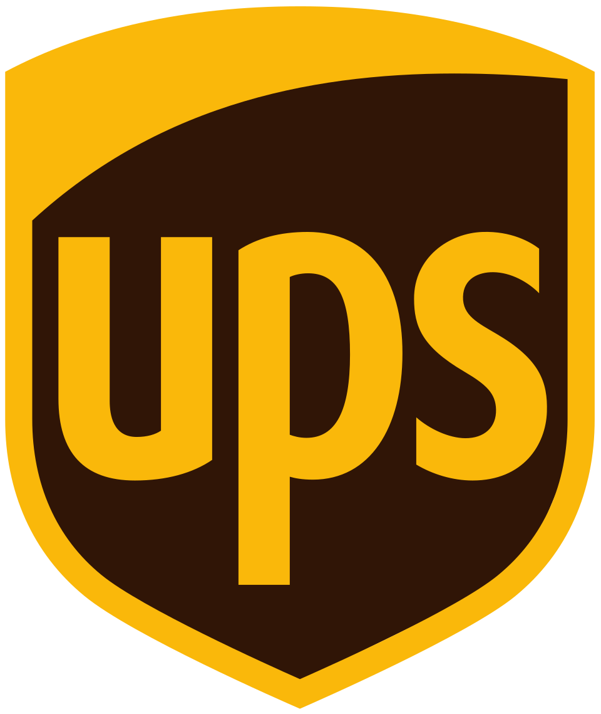

United Parcel Service
UPS(United Parcel Service)는 미국에 기반을 두고 국제 화물 운송을 주로 취급하는 기업이다. 차량과 항공기로 200여 개 국가에서 배송망을 운영한다.
최종 업데이트

United Parcel Service는 어떤 브랜드인가
이 회사는 국제 화물 운송을 중심으로 세계 여러 국가에서 배송 사업을 운영하는 기업이다. 본사는 미국 조지아주 샌디스프링스에 자리한다.
사업망은 200여 개 국가에 걸쳐 있으며 91,700대의 차량과 500여 대의 항공기를 활용한다. 하루 1,480만 개 이상의 화물을 취급하며 직원 수는 40만 명 이상이다.
대한민국에는 1980년대 후반 진출한 뒤 대한통운과 합작 법인을 설립했다. 이후 대한통운의 지분을 인수해 대한민국 법인을 단독 출자 형태로 개편했다.
United Parcel Service는 어떻게 시작되고 성장했나
James E. Casey가 1907년 8월 28일 미국 워싱턴주 시애틀에서 American Messenger Company라는 이름으로 창립했다.
1913년에는 Merchants Parcel Delivery로 사명을 바꾸고 차량을 구입해 시애틀 우체국의 배송 업무를 맡았다. 1919년 현재의 사명으로 변경했으며 1922년 택배 사업을 시작했다.
1930년 뉴욕시에 진출한 뒤 1978년부터 미국과 캐나다 전역에 배달했다. 대한민국에서는 1996년 3월 대한통운과 합작 법인을 설립했고 2008년 6월 18일 단독 출자 법인으로 개편했다.
United Parcel Service의 브랜드 아이덴티티는 무엇인가
차량 91,700대와 항공기 500여 대를 활용해 하루 1,480만 개 이상의 화물을 취급하는 국제 운송망이 구분점이다.
United Parcel Service의 대표 제품과 서비스는 무엇인가
사업의 중심은 국제 화물 운송이며 여러 국가를 연결하는 배송 서비스를 운영한다. 운송망에는 91,700대의 차량과 500여 대의 항공기를 활용하며 이를 통해 하루 1,480만 개 이상의 화물을 취급한다.
1922년부터 택배 사업을 운영했고 미국과 캐나다 전역으로 배달 범위를 확대했다. 대한민국에서는 대한통운과의 합작 법인을 통해 사업을 운영한 뒤 지분 인수에 따라 단독 출자 법인으로 전환했다.
United Parcel Service는 지금 어떤 상태인가
본사는 미국 조지아주 샌디스프링스에 있으며 200여 개 국가에서 국제 화물 운송을 취급한다. 운송 자산은 차량 91,700대와 항공기 500여 대이며 직원 수는 40만 명 이상이다.
대한민국 법인은 2008년 6월 18일 대한통운의 지분을 인수한 뒤 단독 출자 형태로 개편했다.
United Parcel Service 로고는 어떻게 변해왔나
자주 묻는 질문
United Parcel Service는 어느 나라 브랜드인가요?
United Parcel Service는 미국의 모빌리티 브랜드입니다.
United Parcel Service는 언제 설립되었나요?
United Parcel Service는 1907년 설립되었습니다.
United Parcel Service의 브랜드 아이덴티티는 무엇인가요?
차량 91,700대와 항공기 500여 대를 활용해 하루 1,480만 개 이상의 화물을 취급하는 국제 운송망이 구분점이다.
United Parcel Service의 대표 제품은 무엇인가요?
사업의 중심은 국제 화물 운송이며 여러 국가를 연결하는 배송 서비스를 운영한다.
United Parcel Service의 본사는 어디에 있나요?
본사는 미국 조지아주 샌디스프링스에 있으며 200여 개 국가에서 국제 화물 운송을 취급한다.
United Parcel Service의 창업자는 누구인가요?
United Parcel Service의 창업자는 제임스 E. 케이시입니다(위키데이터 기준).
United Parcel Service의 공식 웹사이트는 어디인가요?
United Parcel Service의 공식 웹사이트는 https://www.ups.com/ 입니다.
출처와 검증
United Parcel Service 관련 참고: 공식 웹사이트 · 위키데이터 Q155026 · 한국어 위키백과 · 영어 위키백과. 브랜드명은 한글과 원어를 함께 표기하되 데이터에 없는 표기는 만들지 않습니다. 기원 국가·설립연도는 검수된 정의문에서 확인된 값을 우선하고, 없을 때만 공식 웹사이트 URL이 일치하는 위키데이터 개체의 값을 씁니다. 위키데이터 값은 2026-09-12 기준입니다.